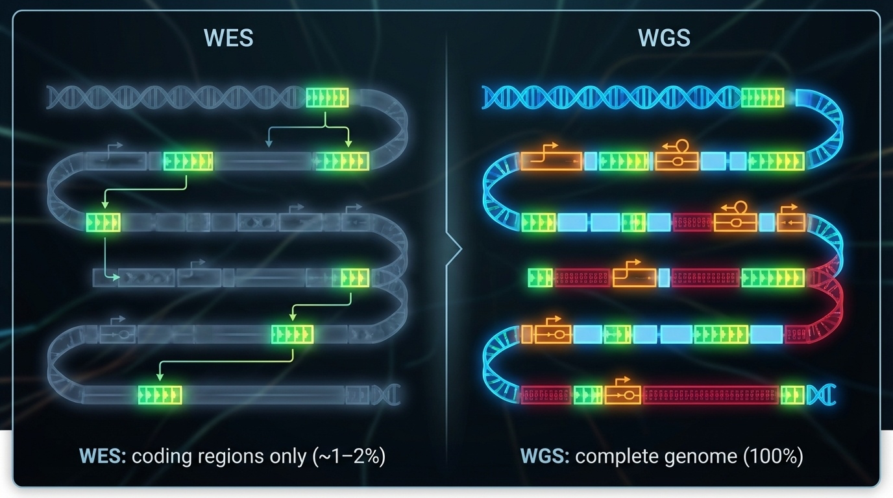
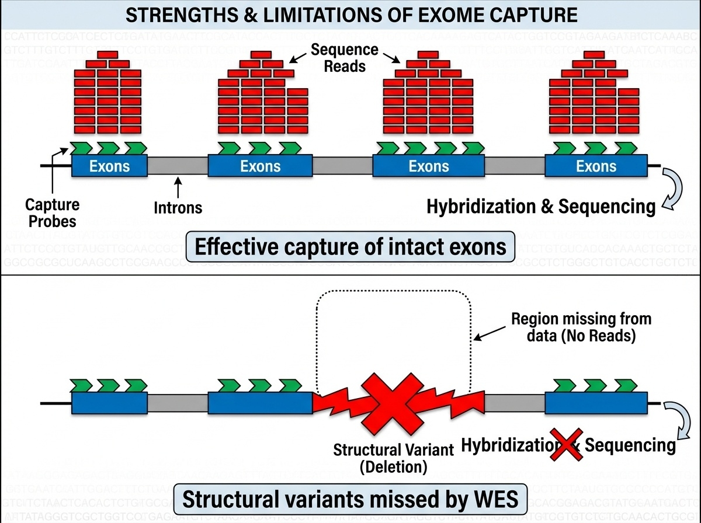
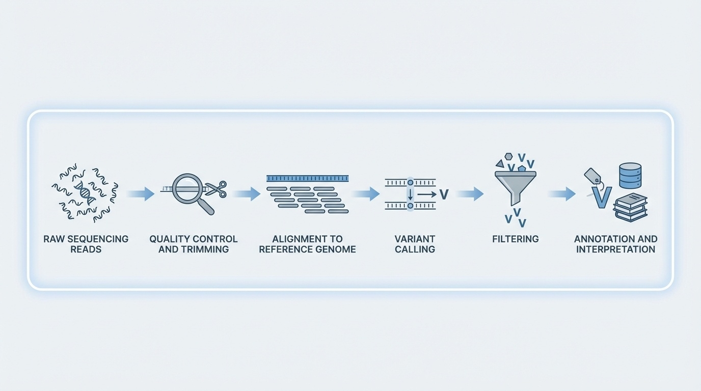
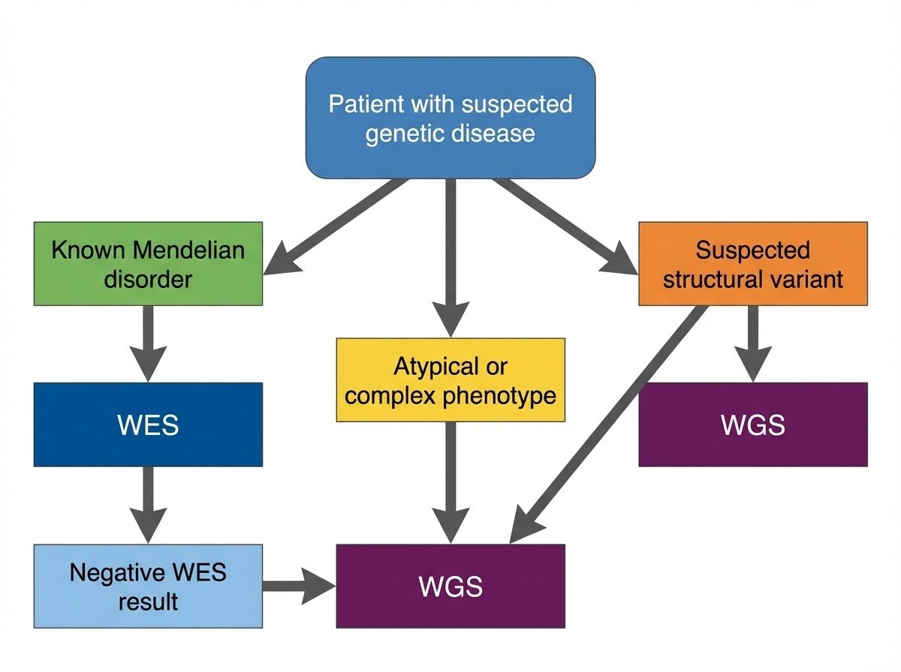

BSMS205 · Genetics
NGS Applications
Chapter 6 · Part I · The Human Genome
Welcome to Chapter six of BSMS two oh five Genetics. Last week we looked at next-generation sequencing as a technology — flow cells, clusters, sequencing by synthesis, the whole hardware story. Today we ask the practical follow-up question. We have cheap sequencing. Now what do we actually do with it? Which parts of the genome do we read, how do we turn raw reads into a list of variants, and how do clinicians decide whether a patient gets exome or whole-genome sequencing? That is the agenda for today.
A question to start with
If sequencing is cheap,everything ?
Here is the puzzle for today. If sequencing technology can read every base in the human genome, why would we ever choose to read only part of it? It is a bit like asking why you would only search the kitchen when you have lost your keys somewhere in the house. The answer turns on cost, complexity, and where the answers actually live. Most disease-causing mutations sit in a tiny one to two percent of the genome. That single fact created a whole experimental design — exome sequencing — that has dominated clinical genetics for over a decade.
Two ways to use NGS
WES
Whole-Exome SequencingRead only the coding 1–2%
~30–50 Mb captured
WGS
Whole-Genome SequencingRead everything
~3.2 Gb · 100% coverage
Two flavors of next-gen genome analysis. Whole-exome sequencing reads only the coding portion of the genome — about thirty to fifty million bases, roughly one to two percent of the total. Whole-genome sequencing reads everything — all three point two billion bases, including introns, regulatory regions, and intergenic DNA. They are different experimental designs, not just different scales. The choice between them shapes what variants you can find, how much storage you need, and how long interpretation takes.
Why focus on the exome?
85%
of known disease mutations sit in exons
Exons are 1–2% of the genome
But carry the vast majority of pathogenic variants
Why? Exons code for proteins directly
Here is the fact that justifies the entire idea of exome sequencing. About eighty-five percent of known disease-causing mutations occur in exons — the protein-coding portion of the genome. And yet exons are only one to two percent of the genome by length. Why this concentration? Because exons code for proteins directly. A single base change in an exon can swap one amino acid for another, create a premature stop codon, or shift the reading frame. Any of those can break the protein. Changes in introns or intergenic DNA can matter too, but the effect is usually weaker and harder to predict.
Roadmap for today
What is the exome — and why it matters
WES vs WGS · head to head
How target capture actually works
From reads to variants · the pipeline
Clinical decision tree · which to order
Cost, scale, and the future
Summary & what comes next
Here is how we will move today. First, we ground ourselves in what the exome actually is. Second, we put exome and genome sequencing side by side. Third, we open up the target capture step that defines exome sequencing. Fourth, we walk through the computational pipeline that turns millions of short reads into a list of variants. Fifth, we look at how a clinician decides which test to order. Sixth, we look at cost, storage, and where the field is heading. And finally, we wrap up. Buckle in.
§ 1
Where Disease
Let's start with anatomy. The exome is not a thing you can point to on a chromosome — it is a collection. Specifically, it is the union of all exonic sequences in all twenty thousand human genes. To understand why that union is so important, we need to remember how a gene is built.
Exons, introns, and proteins
Each gene = exons + introns
Exons: 50–200 bp each · code for protein
Introns: often thousands of bp · spliced out
Final mRNA = exons only → translated to protein
Each of your roughly twenty thousand protein-coding genes is built from two kinds of sequence. Exons — the parts that actually encode protein — are short, typically fifty to two hundred bases each. Introns — the parts that get cut out — are often thousands of bases long. When the cell makes a protein, it transcribes the entire gene into RNA, then splices out the introns and joins the exons. Only the exonic sequence ends up in the mature messenger RNA, and only the exonic sequence gets translated into protein. So if a mutation is going to break the protein directly, the most likely place for it is in the exon.
The exome by the numbers
~30–50
total exonic sequence
~20,000 protein-coding genes
~180,000 exons total
1–2% of the 3.2 Gb genome~85% of disease mutations sit here
Let's put numbers on it. The full set of human exons — the exome — is roughly thirty to fifty million bases. That is across about twenty thousand genes and roughly one hundred eighty thousand individual exons. As a fraction of the full three point two gigabase genome, that is one to two percent. And as I just said, this tiny slice carries about eighty-five percent of known pathogenic variants. The opportunity is obvious: if most of the answers live in one to two percent of the territory, focus your sequencing there. That is the entire pitch for exome sequencing.
§ 2
WES vs WGS
Now let's compare the two approaches directly. Coverage, cost, and most importantly — what each one can and cannot see. This is the slide you should remember if you remember nothing else from today.
What can each one see?

Figure 1. WES targets only coding exons (~1–2% of the genome) where most disease variants reside. WGS reads everything — exons, introns, regulatory regions — at higher cost and complexity.
Here is the picture. WES, on one side, focuses on the coding exons — those small islands of protein-coding sequence scattered across each chromosome. WGS, on the other side, reads the whole landscape — exons, introns, promoters, enhancers, intergenic DNA, even repetitive regions. WGS gives you everything. WES gives you the high-yield neighborhoods. Both have their place — the question is when to use which one.
Side by side
Feature WES WGS
Coverage 1–2% of genome 100% of genome Target size 30–50 Mb 3.2 Gb Data per sample ~6 GB ~90–100 GB Typical depth 100–150× 30–40× Cost (2024) ~$400–500 ~$600–1,000 Diagnostic yield 25–50% 30–55%
Here is the same comparison as a table. Notice that WES gives you deeper coverage — one hundred to one hundred fifty times depth on the regions it captures, compared to thirty to forty times for WGS. That is because all of the sequencing effort is concentrated on a smaller target. WES generates about six gigabytes of data per sample. WGS generates ninety to one hundred gigabytes — fifteen times more. Cost is now within striking distance — about four hundred to five hundred dollars for WES, six hundred to one thousand for WGS. The diagnostic yield, the headline clinical number, is roughly comparable, with WGS slightly higher in most studies.
What each one misses
WES misses
Structural variants Deep intronic variants
Regulatory regions
Repeat expansions
WGS catches all of these
Deletions, duplications, inversions
Cryptic splice sites
Promoter / enhancer mutations
Triplet repeats (with long reads)
Where WES falls short is the more interesting half of this comparison. WES misses structural variants — large deletions, duplications, inversions — because of how target capture works, which we will get to in the next section. It misses deep intronic variants that can create cryptic splice sites. It misses regulatory variants in promoters and enhancers. And it misses repeat expansions, especially without long-read sequencing. WGS, by definition, has a chance at all of these. That is the trade-off. WES gets you depth in the obvious places. WGS gets you everything else.
§ 3
Target Capture
Here is the trick that defines exome sequencing. WES does not actually sequence only exons in some clever direct way — that would be technically impossible. Instead, it uses a clever wet-lab trick to physically separate exons from the rest of the genome before sequencing. The trick is called target capture, and understanding it is essential for understanding what WES can and cannot see.
The capture trick · 7 steps
Fragment genomic DNA
Add biotinylated baits · complementary to exons
Baits hybridize with exonic fragments
Add streptavidin magnetic beads
Pull beads with a magnet → captured exons
Wash away introns & intergenic DNA
Sequence the captured fragments
Here is target capture in seven steps. Step one — fragment genomic DNA, just like you would for any sequencing prep. Step two — add biotinylated baits, which are short DNA probes complementary to the exonic sequences you want to capture, each tagged with biotin. Step three — let the baits hybridize to your exonic fragments through complementary base pairing. Step four — add streptavidin-coated magnetic beads, which bind biotin tightly. Step five — apply a magnet, pull down the beads, and with them, the captured exons. Step six — wash away everything else: introns, intergenic DNA, all of it goes down the drain. Step seven — release and sequence the captured exonic fragments. That is how you get an exome.
The bait-and-bead analogy
Like using a magnet
The "metal" = exons (tagged with biotin via baits)
The "magnet" = streptavidin beads
Everything non-magnetic gets washed away
If the seven-step description is too dense, here is the analogy. Imagine a pile of mixed materials, some metal and some not. You want only the metal pieces. You stick a magnet in. Metal sticks. Non-metal falls away. Target capture is the molecular version of that — biotin-tagged baits make exons "magnetic," streptavidin beads are the magnet, and the wash step is letting gravity pull away everything else. The elegance is that you do not need to know the position of each exon — you just need probes that match exonic sequence.
Why capture works · and where it fails

Figure 2. Top: intact exons → baits bind, sequence captured. Bottom: a deletion removes the exon → nothing for the bait to grab → variant invisible to WES. This is why WES misses 5–10% of pathogenic variants.
Here is the picture. Top panel — when the exon is intact, baits bind, beads capture, the fragment ends up in your sequencing data. You get high coverage, you call your variants, life is good. Bottom panel — but suppose the patient has a large deletion that removes that whole exon. Now there is nothing for the bait to bind to. The fragment is simply absent from the captured pool. WES does not just call it as deleted — it cannot see that anything is missing at all. This is the fundamental blind spot of WES, and it accounts for roughly five to ten percent of pathogenic variants that WGS catches and WES doesn't.
The historic case · Miller syndrome
2010 · four affected siblings · rare facial disorderStrategy: WES on all four · find shared rare variants
Result: novel variants in DHODH
Took months , not years · cost thousands , not millions
The paper that launched the WES era.
WES proved itself to the world in twenty ten with a now-famous paper on Miller syndrome — a rare developmental disorder. Researchers had four affected siblings. Traditional gene-hunting had failed. The WES strategy was almost embarrassingly simple — sequence all the exons in the four affected siblings, look for rare variants they shared but their healthy parents did not, and see what jumps out. The answer was a gene called D H O D H that had never been linked to human disease before. The whole project took months instead of years and cost thousands of dollars instead of millions. That paper was the moment the WES era began. Within a year, every clinical genetics lab was setting up exome capture.
§ 4
From Reads
Whether you do exome or whole-genome, after sequencing you have hundreds of millions or billions of short reads sitting on a hard drive. Now comes the computational half of the experiment, which is at least as important as the wet lab. We need to turn raw reads into a clean list of variants. Five steps.
The pipeline in one figure

Figure 3. QC removes bad bases, alignment maps reads to the reference, variant calling identifies differences, filtering removes artifacts, annotation adds biological context. FASTQ → BAM → VCF.
Here is the whole pipeline in one diagram. Quality control trims low-quality bases. Alignment maps each read to a position on the reference genome. Variant calling stacks up the aligned reads at every position and asks "does this look different from the reference?" Filtering removes artifacts. Annotation adds biological context — is the variant in a gene, what does it do to the protein, is it common in the population. The file formats track this — you start with FASTQ, you align to BAM, you call variants into VCF. Memorize that flow. FASTQ to BAM to VCF.
Step 1 · Quality scores
Q score Accuracy Error rate
Q20 99% 1 / 100 Q30 99.9% 1 / 1,000 Q40 99.99% 1 / 10,000
Tool: FastQC · trim low-quality ends, remove adapters.
Step one is quality control. Each base call comes with a Q score that tells you how confident the sequencer is in that call. Q twenty means ninety-nine percent accuracy, or one error in a hundred bases. Q thirty is ninety-nine point nine percent, one error in a thousand. Q forty is ninety-nine point nine nine percent. The standard tool is FastQC, which checks per-base quality, adapter contamination, GC content, and duplication levels. Low-quality bases — typically at the ends of reads — and adapter sequences get trimmed before alignment. Garbage in, garbage out. Quality control is not optional.
Step 2 · Alignment to reference
Each read finds its best matching position on the genome
BWA · gold standard for Illumina short readsMinimap2 · designed for long readsOutput: BAM file (Binary Alignment Map)
Repetitive regions create ambiguity for short reads.
Step two — alignment. The aligner takes each read and asks "where on the reference genome does this match best?" For Illumina short reads, the standard tool is B W A — the Burrows-Wheeler Aligner. For long reads from PacBio or Nanopore, it is Minimap2. The output is a BAM file, which is just a binary, indexed format that lists every read and its mapped position. The tricky part is repetitive regions. If a read could plausibly have come from any of fifty places, the aligner has to make a choice or flag it as ambiguous. This is one of the reasons short reads struggle with structural variants and centromeres.
Step 3 · Variant calling
Stack reads at each position · count bases
Compare to reference · compute likelihood of real variant vs error
Need ≥20–30 reads for confidence
chr1:12345 ref=G · 28 reads = A (Q30+) · 2 reads = Ghomozygous A/A
Step three — variant calling. At every position in the genome, the caller stacks up all the reads that aligned there and counts bases. If almost all the reads agree with the reference, no variant is called. If most reads disagree, that is probably a real variant. Here is a worked example. At position twelve thousand three forty-five on chromosome one, the reference base is G. In your patient, twenty-eight reads show A — all with high quality scores — and two reads show G with marginal quality. The variant caller weighs these probabilities and concludes this is most likely a homozygous variant — both copies of the chromosome have an A. You need at least twenty to thirty reads to make this call confidently.
The variant-calling toolbox
GATK · gold standard from the Broad InstituteFreeBayes · Bayesian variant callerDeepVariant · deep learning approach (Google)
Output: a VCF file (Variant Call Format).
Three tools dominate the variant-calling space. GATK — the Genome Analysis Toolkit from the Broad Institute — is the long-standing gold standard. FreeBayes is a Bayesian alternative. DeepVariant is the new kid on the block, from Google, which uses deep learning to do variant calling and tends to win benchmark competitions. Whichever tool you use, the output is the same — a VCF file, which is a tab-separated text file listing every detected variant with its position, reference and alternate alleles, quality score, genotype, and read depth. VCF is the lingua franca of clinical genomics.
Step 4 · Filter the artifacts
Minimum depth · ≥10–20 reads
Quality threshold · ≥20 or ≥30
Strand bias · reads from one strand only = artifact
Allele balance · het should be ~50/50
Initial variant calls always contain false positives. Step four is filtering. Four common filters. Minimum depth — if fewer than ten or twenty reads cover a position, you cannot trust the call. Quality threshold — variants below Q twenty or Q thirty get removed. Strand bias — every fragment should produce reads from both DNA strands roughly equally; if a variant is supported only by reads from one strand, that is usually a sequencing artifact, not biology. Allele balance — for a heterozygous variant, you expect roughly fifty percent of reads to show each allele; large deviations are suspicious. These filters cut the false positive rate dramatically.
Step 5 · Annotate
Location · gene? exon, intron, intergenic?Effect · synonymous, missense, nonsense, frameshift, spliceFrequency · how common in gnomAD ?Clinical · is it in ClinVar ? Pathogenic? VUS?Tools: VEP , ANNOVAR, SnpEff
Step five — annotation. A bare VCF file is just positions and base changes. Annotation tools — VEP, ANNOVAR, SnpEff — add biological context. Where does the variant sit? In a gene, in an exon, in a splice site, in an intergenic region. What does it do to the protein? Is it synonymous, missense, nonsense, frameshift, or splice site? How common is the variant in population databases like gnomAD? If it is found in five percent of healthy people, it is unlikely to cause severe rare disease. Is it already in ClinVar with a clinical interpretation — pathogenic, benign, or variant of uncertain significance? Annotation is what turns a list of positions into a clinically actionable report. We will spend all of chapter seven on this.
The complete workflow · 10 days
Days Step
1–3 DNA extraction · library prep · capture (WES) 4–5 Sequencing on NovaSeq 6000 6–7 QC, alignment, dedup, variant calling 8–10 Filter · annotate · interpret · validate
From sample to genetic diagnosis in about 10 days .
Here is the whole workflow on a calendar. Days one through three — extract DNA, prepare the library, do the capture for exome. Days four and five — sequencing, typically on a NovaSeq six thousand, generating tens to hundreds of millions of read pairs. Days six and seven — bioinformatics: alignment, deduplication, variant calling, initial filtering. Days eight through ten — interpretation: filter for rare variants, focus on genes related to the patient's symptoms, prioritize high-impact effects, check ClinVar, validate any candidates with Sanger sequencing. From a tube of blood to a genetic diagnosis in about ten days. Compare that to the months or years of older approaches. That is the speedup.
§ 5
Which Test
Now the clinical question. A doctor sees a patient with a suspected genetic disease. Should they order whole-exome sequencing or whole-genome sequencing? The answer is not "always the more expensive one." There is a real decision tree, and it depends on what you suspect.
The decision tree

Figure 4. Start with WES for suspected Mendelian disorders with known coding variants. Move to WGS when WES is negative, structural variants are suspected, or the phenotype is complex.
Here is the standard decision tree, simplified. Start with exome sequencing if the patient looks like a known Mendelian disorder caused by coding variants — most cases fall here. Move to whole-genome sequencing when WES comes back negative, when you suspect a structural variant, or when the phenotype is unusual or complex enough that you want a comprehensive screen. The order matters because exome is cheaper and easier to interpret. Use the simpler test first, escalate if needed.
Start with WES if...
Patient features fit a known Mendelian disorder
Need to screen many genes at once (e.g., hearing loss → 100+ genes)
Cost matters · large studies, resource-limited settingPhenotype suggests a coding variant · loss of protein function
Four scenarios where you start with exome. First — the patient has features of a known Mendelian disorder where most causative variants are in coding regions. Second — you need to screen many candidate genes at once. Hearing loss, for example, can involve more than a hundred genes; testing them one by one is prohibitive. Third — cost matters, either for a large study or a resource-limited setting. Fourth — the phenotype suggests loss of a specific protein function, which usually points to a coding variant. In all four cases, exome is the right first move.
Move to WGS if...
WES negative · still suspect genetic cause
Suspect a structural variant · multiple anomalies, dysmorphic features
Phenotype is complex or atypical · regulatory variant possible
Want future-proof data for reanalysis
WGS solves 10–30% of WES-negative cases.
And four scenarios where you move up to whole genome. First — exome came back negative but you still strongly suspect a genetic cause. WGS finds answers in roughly ten to thirty percent of WES-negative cases, often by detecting structural or non-coding variants. Second — you suspect a structural variant from the start; for example, a child with multiple congenital anomalies and dysmorphic features. Third — the phenotype is complex or atypical and a regulatory variant is plausible. Fourth — you want future-proof data, because as we learn more about non-coding variants, you can re-analyze the same WGS data in five or ten years and possibly find new answers.
A real case · the boy who needed WGS
Patient · 8-year-old boy · ID, autism, dysmorphic featuresMicroarray → normalWES → variants of uncertain significance, nothing diagnosticWGS → 150 kb deletion removing 5 exons of a neurodev gene
Too small for microarray · invisible to WES · resolved by WGS.
Here is a real case that illustrates the decision tree. An eight-year-old boy with intellectual disability, autism, and dysmorphic facial features. They started with a chromosomal microarray, the cheap quick test — normal. They did exome sequencing — found several variants of uncertain significance but nothing diagnostic. Finally they did whole-genome sequencing, and it turned up a one hundred fifty kilobase deletion that removed the first five exons of a neurodevelopmental gene. The deletion was too small for the microarray to detect at clinical resolution, and it was completely invisible to WES because there was nothing for the capture probes to grab. WGS provided the answer after the other methods failed. This is the canonical pattern.
§ 6
Cost, Scale,
Last big section. The economics of WES versus WGS are changing fast, and that is shifting the field. Let's look at where the costs are heading and what that means for which test wins.
The cost gap is closing
Year WES WGS Ratio
2010 ~$5,000 ~$50,000 10× 2015 ~$1,000 ~$5,000 5× 2020 ~$500 ~$1,000 2× 2024 ~$400–500 ~$600–1,000 1.5×
As the gap closes, the case for WES weakens .
Here is the cost trajectory. In twenty ten, exome was about five thousand dollars and whole genome was fifty thousand — a ten-fold difference. In twenty fifteen, the ratio shrunk to five-fold. In twenty twenty, two-fold. By twenty twenty-four, exome is around four hundred to five hundred dollars and whole genome is six hundred to a thousand. The ratio is now one and a half to two. As the gap closes, the economic argument for exome weakens. Soon the question becomes "why settle for less data for almost the same price?"
Storage matters at scale
UK Biobank · 500,000 genomes × 90 GB = 45 PB
Cost per sample is not the whole story. Storage matters at scale. Exome is six gigabytes per sample. Whole genome is ninety gigabytes — fifteen times more. For a thousand samples, that is six terabytes versus ninety terabytes. For a major biobank like UK Biobank, which has sequenced five hundred thousand whole genomes, you are looking at forty-five petabytes of data. That requires serious infrastructure — cold storage, transfer pipelines, computing clusters. For large population studies, the storage and analysis bottleneck can outweigh the per-sample sequencing cost.
The interpretation bottleneck
WES
~20,000 variants / person
Mostly coding · known effects
Analyzed in days
WGS
4–5 million variants / personMost non-coding · uncertain
Takes weeks
"We went from being starved for data to drowning in it."
And here is the other bottleneck — interpretation. An exome gives you about twenty thousand variants per person. Most are in coding regions with known functional effects. A clinical lab can work through them in a few days. Whole-genome sequencing gives you four to five million variants per person. Most are in non-coding regions where we genuinely do not know what they do. Working through them takes weeks. As one geneticist put it — and I think this is the quote of the chapter — "we went from being starved for data to drowning in it." Sequencing is fast. Interpretation is slow. That gap is the new frontier.
What's pushing toward universal WGS
Cost convergence · WES and WGS nearly equalLong reads · PacBio & Nanopore handle SVs and repeatsAI interpretation · machine learning for non-coding variantsYield · WGS consistently 5–10% higher than WES
Four forces are pushing the field toward universal whole-genome sequencing. Cost convergence — already discussed. Long-read sequencing — PacBio HiFi and Oxford Nanopore handle structural variants, repeat expansions, and phasing far better than short reads, and long reads only make sense at whole-genome scale. AI-driven interpretation — machine learning tools are starting to make sense of non-coding variants, which is where WGS has its unique value. And clinical evidence — across multiple studies, WGS consistently yields five to ten percent more diagnoses than WES. Add those four together and the trend is clear. We are heading toward WGS as the default.
But WES isn't dead yet
Large population studies · storage / cost dominates
Focused disease studies · known coding genes only
Lower-income settings · every dollar counts
High-coverage needs · WES gets 100×+ for the same money
That said, WES is not dead. Four scenarios where it still wins. Large population studies where storage and cost dominate the equation — when you are sequencing five hundred thousand people, the fifteen-fold storage difference matters. Focused disease studies that involve only known coding genes — there is no upside to sequencing introns you will ignore. Lower-income clinical settings where every dollar counts. And high-coverage needs — for a fixed budget, WES gives you one hundred to one hundred fifty times depth on exons, where WGS gives you only thirty to forty times. For some applications, that depth advantage matters. WES will be with us for a while.
The "WGS now, exome first" strategy
Sequence the whole genome.
Immediate WES-equivalent diagnosis
Expand to non-coding if needed
Reanalyze as databases improve
Here is the hybrid strategy that is becoming popular. Do whole-genome sequencing — pay the slightly higher cost — but initially analyze only the exonic regions. You get a WES-equivalent answer right away. If the exome analysis is negative, you already have the data to expand into non-coding regions without re-sequencing. And as databases and interpretation tools improve over the next decade, you can come back and re-analyze the same data and possibly find answers you missed the first time. This is increasingly how forward-looking clinics are operating. WGS gives you the data; exome-first analysis gives you the speed.
§ 7
Summary
Let's pull the threads together.
What to take away
WES · 1–2% of genome · 85% of disease variants · cheap & fastTarget capture · biotin baits + magnetic beads · misses SVsPipeline · FASTQ → BAM → VCF · QC, align, call, filter, annotateDecision tree · WES first, WGS for negative or complex casesCost gap is closing · field is shifting toward universal WGS
Five things to take away. One — exome sequencing reads only one to two percent of the genome but captures about eighty-five percent of known disease variants. It is cheap and fast and remains the workhorse of clinical genetics. Two — the trick that defines exome sequencing is target capture using biotinylated baits and streptavidin magnetic beads, and that trick fundamentally cannot detect structural variants because there is nothing for the bait to grab. Three — the bioinformatics pipeline goes FASTQ to BAM to VCF, with quality control, alignment, variant calling, filtering, and annotation as the five steps. Memorize that flow. Four — clinically, you start with exome and escalate to whole genome when exome is negative or when you suspect a structural variant. Five — the cost gap between WES and WGS is shrinking, and the field is moving toward universal whole-genome sequencing as the default.
Next lecture
We get millions of variants.matters ?
Chapter 7 · Variant Annotation & Genomic Databases
One question to leave you with. Today you saw that an exome gives you about twenty thousand variants per person and a whole genome gives you four to five million. Almost all of them are benign. The clinical question is — which one is causing your patient's disease? Answering that requires layering on biological knowledge — what gene the variant is in, what it does to the protein, how common it is in healthy people, whether anyone has seen it before in a patient with the same disease. That is variant annotation, and it depends on a constellation of public databases — gnomAD, ClinVar, the Ensembl variant predictor, and others. That is the entire story of chapter seven. See you next time.